Chapter Overview
Key skills you will develop by the end of Chapter 1: Plains and Rivers.
Geography: Plains and Rivers
Complete chapter notes with all diagrams and vocabulary: PDF format
Please note: The content on this page is a concise preview of the chapter. The complete notes, including all detailed explanations, diagrams, worked examples, and exam-style questions, are available in the PDF. We strongly encourage you to download the PDF for the full learning material.
Chapter Diagrams
High-quality illustrated diagrams from W.H. Academy Class 7 Geography notes.
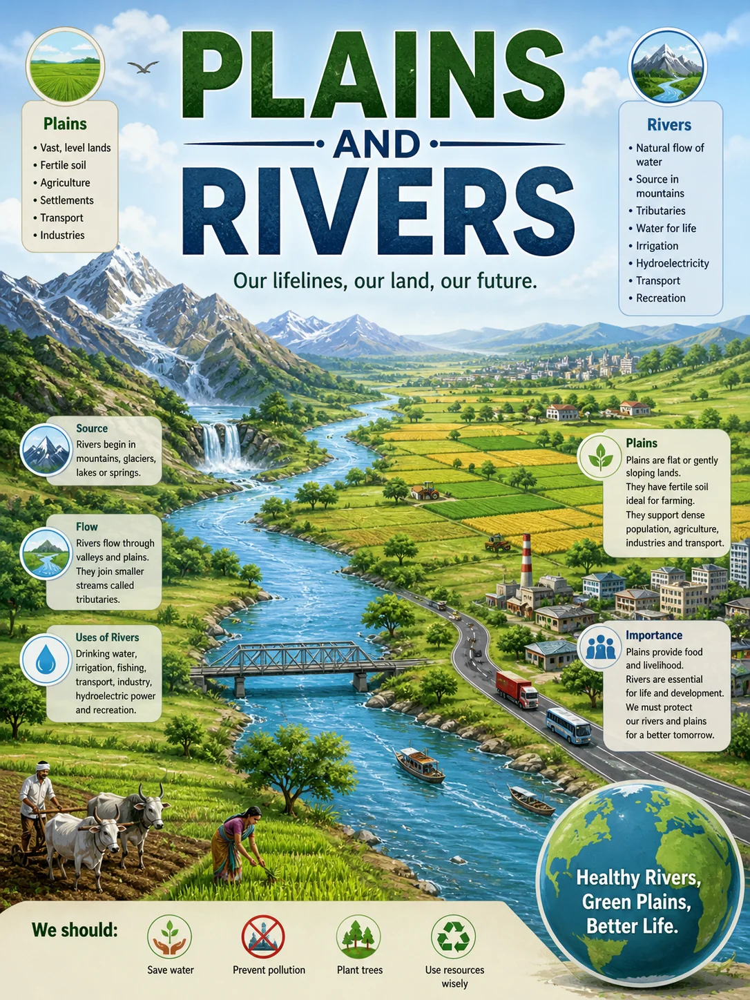
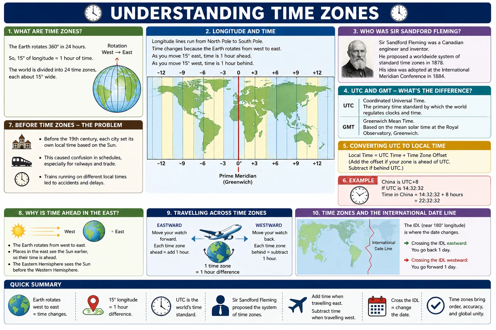
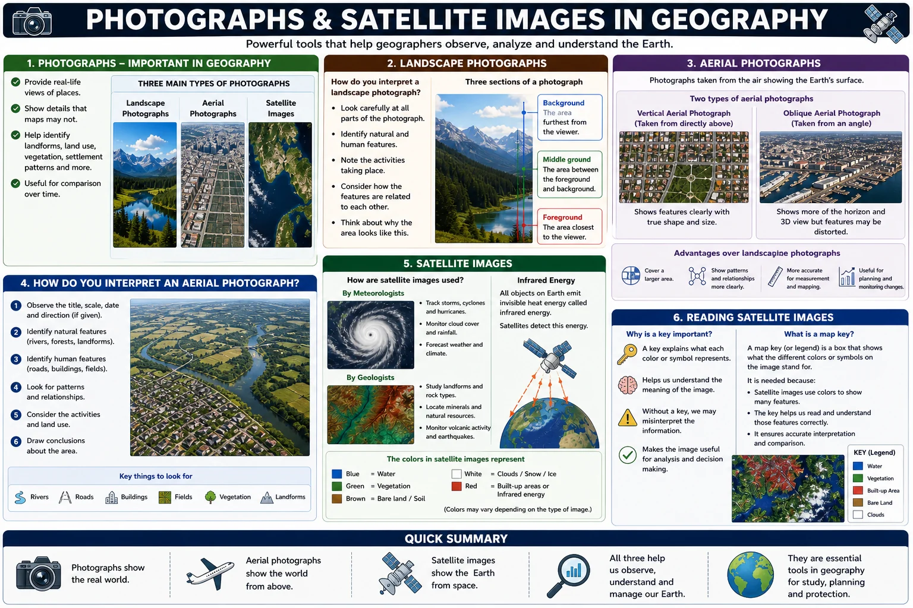
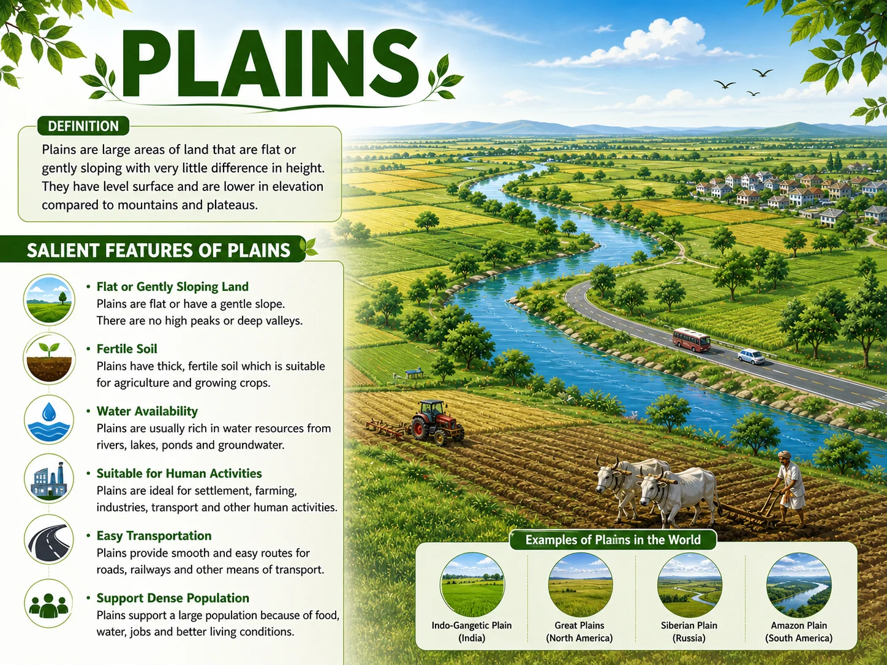
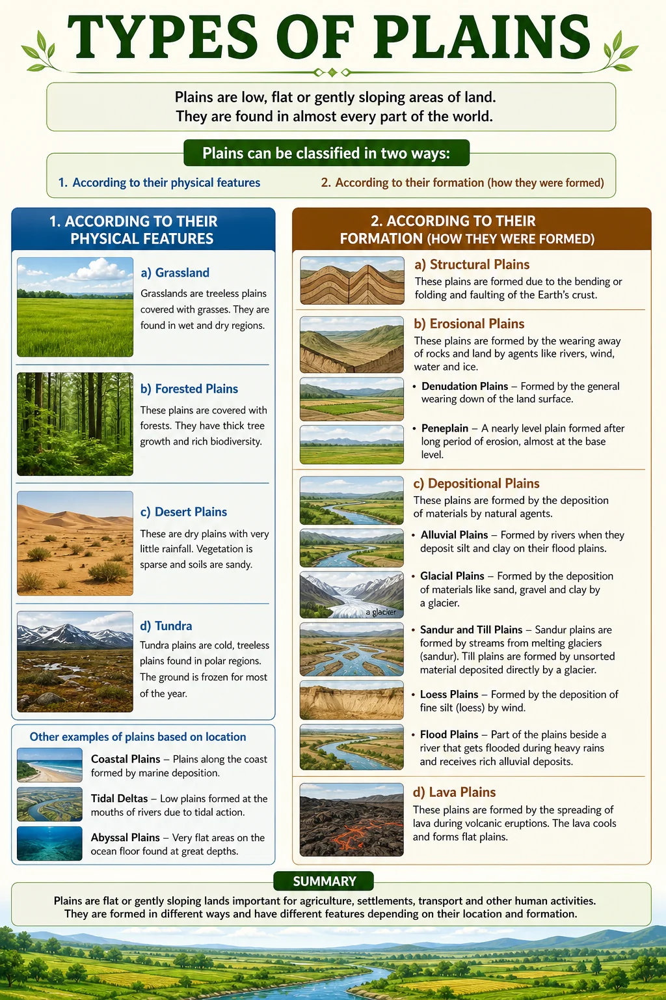
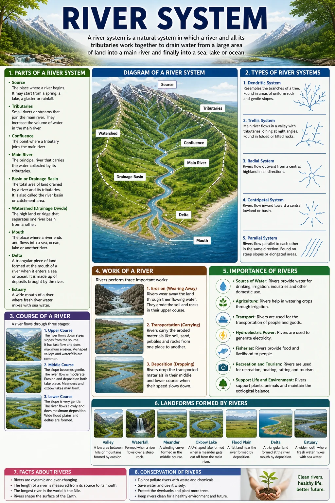
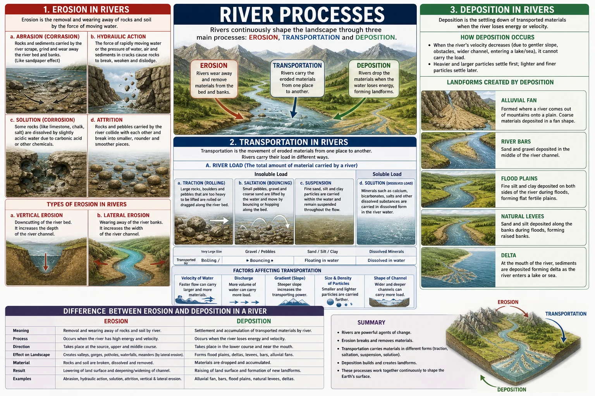
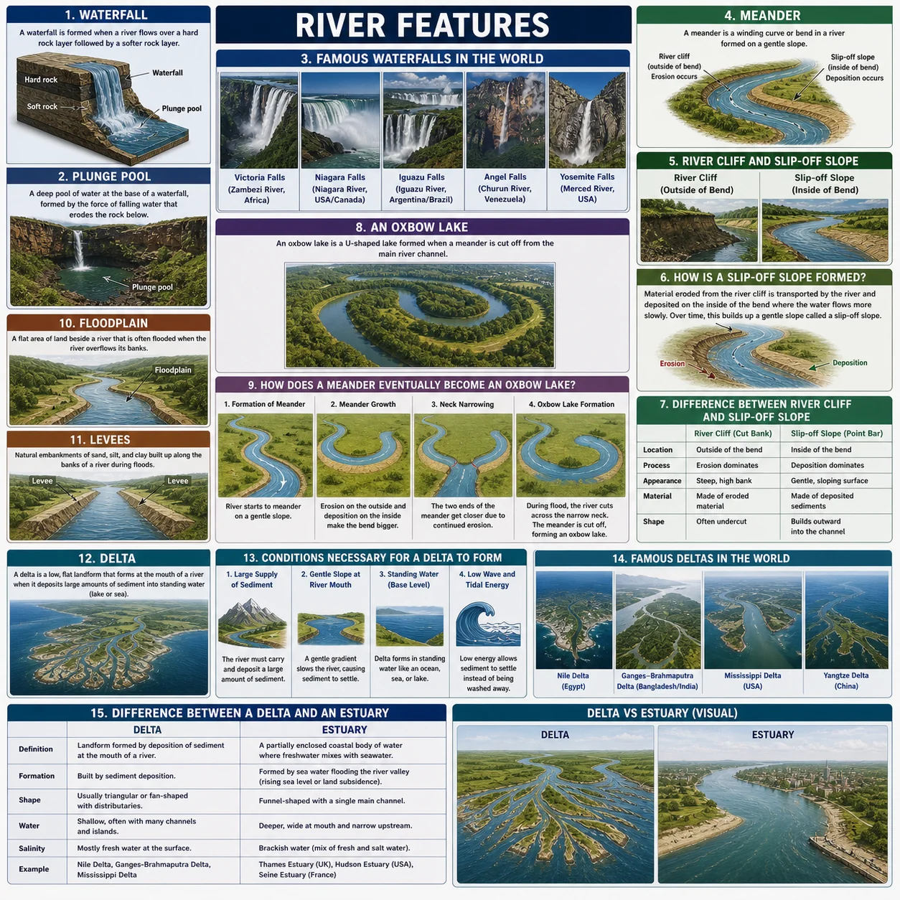
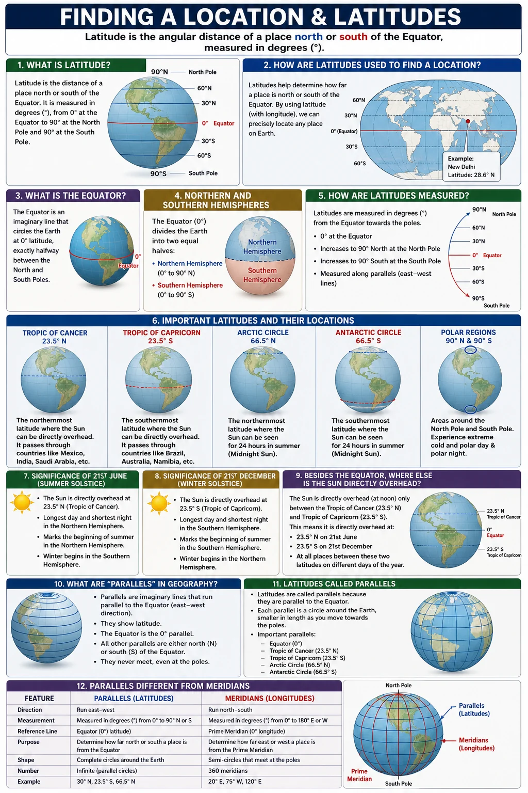
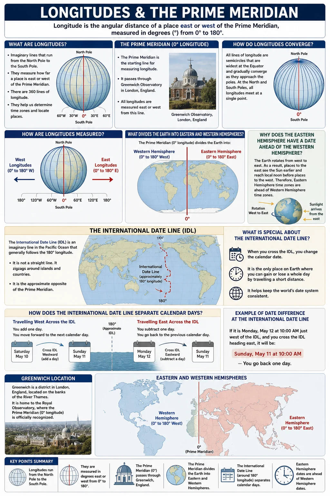
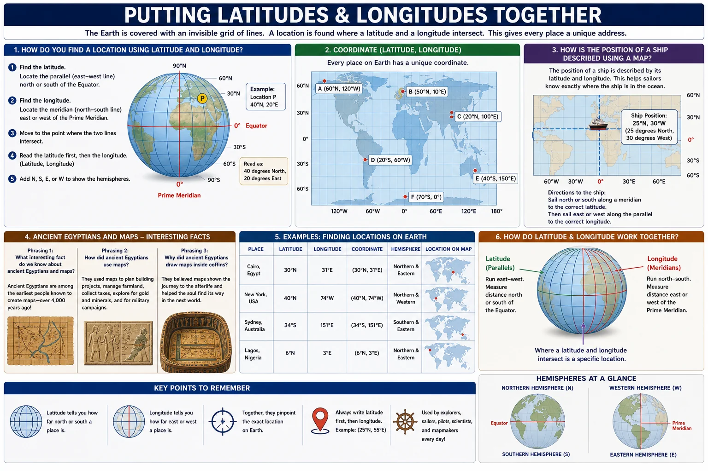
Plains: Definition and Importance
What plains are, why they are densely populated, and key examples.
Definition, Features and Importance of Plains
1. What is a plain?
Plains are generally lower than the land surrounding them. Their flat, open nature makes them very suitable for human settlement, agriculture and transport.
2. Why are plains well-populated regions?
First, the soil in plains is usually fertile and suitable for agriculture, especially where rivers deposit alluvial soil over thousands of years. This allows farmers to grow large quantities of food to support large populations.
Second, the flat land makes it easy and inexpensive to build roads, railways and cities. Transport networks can expand quickly on flat land, encouraging trade, industry and population growth.
3. What is the Indo-Gangetic Plain? How much of the world's population does it support?
It comprises the floodplains of the Indus, Ganges and Brahmaputra river systems. Geographically, it covers most of northern India, almost all of Pakistan and nearly all of Bangladesh.
The primary reason for its enormous population is the extremely fertile alluvial soil deposited by these rivers over thousands of years, which supports intensive agriculture and dense human settlement.
4. What is alluvial soil and why is it important?
Alluvial soil is important because it is very rich in nutrients and is ideal for growing crops such as wheat, rice and cotton. It is the main reason why river plains like the Indo-Gangetic Plain can support such enormous populations.
Types of Plains: Classification
How plains are classified by physical features and by how they were formed.
Classification by Physical Features
5. How can plains be classified?
First, according to their physical features: for example, whether they are covered by grass, ice, sand or forest.
Second, according to their formation: that is, the geological process by which they were formed, such as erosion, deposition or the uplift of land.
6. What are grasslands? Give an example.
The Great Plains of central North America are one of the world's most famous grasslands.
7. What is a tundra?
Tundra plains are found in the northern parts of Canada, Russia and Scandinavia.
Classification by Formation
8. What are structural plains and how are they formed?
Structural plains are commonly found at the borders and edges of major continents.
9. What are erosional plains and what is a peneplain?
The resulting surface is not perfectly smooth because not all rocks erode at the same rate. These slightly uneven erosional plains are called peneplains, a word that means almost a plain.
10. What are depositional plains? Name and describe three types.
Alluvial plains are the most common type, formed when rivers deposit sediment as they slow down at the base of mountains or on flat land. The Indus and Ganges plains of South Asia are alluvial plains.
Lava plains form when volcanic lava flows spread across a flat surface and solidify. They are dark in colour because of a mineral called basalt.
Coastal plains form along coastlines when sea levels fall or when rivers deposit material into the ocean over thousands of years. The Indus Delta in Pakistan is an example.
The River: System, Courses and Uses
Components of a river system, the three courses, and how rivers benefit people.
The River System: Components
11. What is a river system? Name its main components.
Source: The starting point of a river, usually in mountains, glaciers, lakes or springs.
Course: The path the river follows from source to mouth.
Tributaries: Smaller streams and rivers that flow into the main river, increasing its volume of water.
Mouth: The point where the river enters a sea, lake or ocean.
Distributaries: Smaller channels that branch off from the main river near its mouth and flow separately into the sea.
12. What is a drainage basin and what is a watershed?
The boundary of a drainage basin is called a watershed. A watershed is typically formed by a ridge, hill or mountain range that separates one drainage basin from another. Rainwater falling on one side of a watershed flows into one river system, while rainwater on the other side flows into a completely different river system.
The Three Courses of a River
13. What are the three courses of a river? Describe each one.
Middle Course: The gradient becomes gentler and the river moves at a moderate speed. The river begins to flow sideways (lateral erosion), widening its valley. Bends called meanders begin to form as the river erodes its outer bank and deposits material on its inner bank.
Lower Course: Near the mouth, the gradient is nearly flat and the river flows very slowly. The river is wide and carries large quantities of sediment. Meanders are large and the river deposits most of its load, forming wide floodplains and a delta where it meets the sea.
14. What is a meander and how is it formed?
On the outer bank of a bend, the water moves faster and erodes the bank, cutting into it and making it steeper. On the inner bank, the water moves more slowly and deposits sediment, forming a gentle slope. Over time, this process makes the bend more and more pronounced, creating the characteristic S-shape of a meander.
15. What are the main uses of rivers for human beings?
Drinking water: Rivers are a primary source of fresh water for millions of people.
Irrigation: River water is used to irrigate farmland, especially in dry regions like Pakistan.
Hydroelectric power: The energy of flowing river water is used to generate electricity in hydroelectric power stations.
Transport: Rivers have been used as transport routes for goods and people throughout history.
Fishing: Rivers provide fish as a source of food and income for communities.
Industry: Factories use river water for cooling and manufacturing processes.
Recreation: Rivers are used for sports such as swimming, boating and fishing.
Chapter 1 Vocabulary
Important terms from Plains and Rivers: learn these definitions for exam questions.
| Term | Definition |
|---|---|
| Plain | An extensive, nearly level stretch of land with very little change in elevation |
| Elevation | The height of a place above sea level |
| Alluvial soil | Fertile soil deposited by rivers, rich in nutrients and excellent for agriculture |
| Floodplain | The flat land on either side of a river that gets flooded when the river overflows its banks |
| Indo-Gangetic Plain | The most densely populated region in the world, covering Pakistan, northern India and Bangladesh |
| Grasslands | Plains mostly covered with grass whose height depends on the level of rainfall |
| Tundra | Frozen Arctic plains where only mosses and small shrubs survive due to extreme cold |
| Peneplain | An erosional plain with a slightly uneven surface: the name means almost a plain |
| Denudation | The gradual wearing away of the Earth's surface by wind, water, ice and other agents |
| Structural plain | A plain formed by the uplift of ocean floor or continental shelf |
| Lava plain | A plain formed when volcanic lava spreads and solidifies over flat land |
| Coastal plain | A flat plain found along coastlines, formed by falling sea levels or river deposition |
| River system | A main river together with all the tributaries and channels connected to it |
| Tributaries | Smaller streams that flow into the main river and increase its volume |
| Distributaries | Smaller channels that branch off from the main river near its mouth and flow into the sea |
| Drainage basin | The total area of land drained by a single river and all its tributaries |
| Watershed | The boundary: usually a ridge: that separates one drainage basin from another |
| Meander | A wide S-shaped bend in the middle or lower course of a river |
| Delta | A fan-shaped deposit of sediment formed at the mouth of a river where it enters the sea |
| Basalt | A dark volcanic mineral that gives lava plains their characteristic dark colour |
Test Yourself: Chapter 1 Quiz
Chapter-wise MCQs aligned with APSACS and FBISE. No login. Instant results.
Start Quiz NowWant Live Explanation of Plains and Rivers?
Join W.H. Academy: Live tutoring, recorded lectures and full chapter solutions for APSACS and FBISE students in Rawalpindi and online across Pakistan.